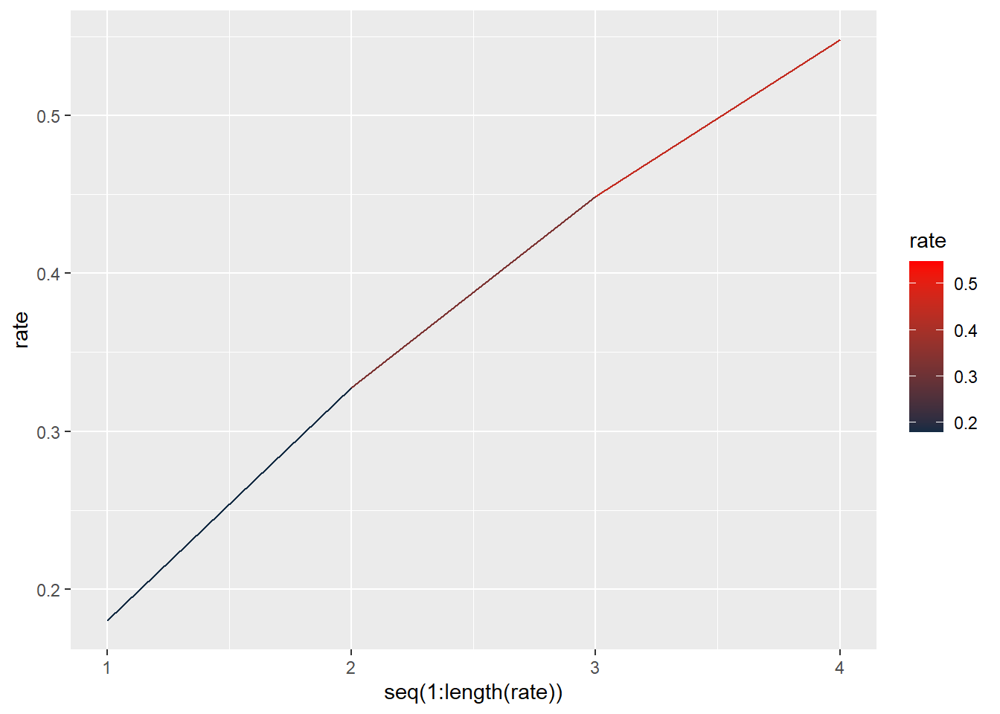
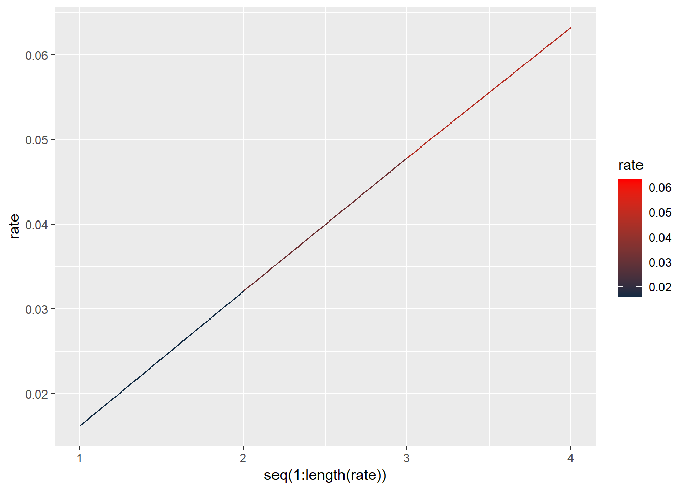
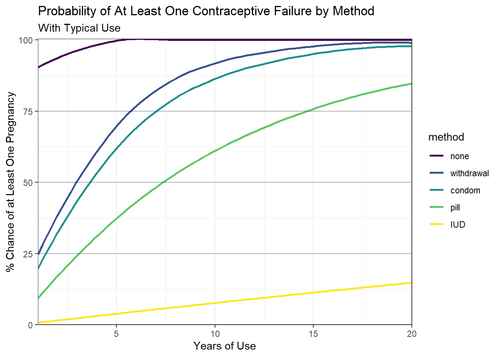

library(ggplot2)
library(tibble)
library(tidyr)Effectiveness of Contraception Methods
Purpose
Visualization to show the expected failure of typical contraception methods.
Percentage of women experiencing an unintended pregnancy during the first year of typical use.
Probability of at least one failure over N years, with typical use.
Source
Source of data is Contraceptive failure in the United States. Trussell,J. Contraception,2011,Vol.83(5),p.398
Code
none <- 0.85
withdrawal <- 0.22
condom <- 0.18
pill <- 0.09
iud_copper <- 0.008
iud_progestin <- 0.002
female_ster <- 0.005
male_ster <- 0.0015FailRate <- function(years, method){
pbinom(0, years, method, lower.tail = FALSE)
}
PlotFailRate <- function(years, method){
rate <<- pbinom(0, 1:years, method, lower.tail = FALSE)
p <- ggplot(as.data.frame(rate), aes(x = seq(1:length(rate)), y = rate))
p +
geom_line(aes(color = rate)) +
scale_colour_gradient(high = "red")
}FailRate(4, condom)[1] 0.5478782FailRate(4, condom * pill)[1] 0.0632423PlotFailRate(4, condom)
PlotFailRate(4, condom * pill)
lifetime_failure <- tibble(years = 1:20,
none = FailRate(years, none),
withdrawal = FailRate(years, withdrawal),
condom = FailRate(years, condom),
pill = FailRate(years, pill),
iud_copper = FailRate(years, iud_copper))
failure_table <- pivot_longer(lifetime_failure, cols = -c(years), names_to = "method", values_to = "failure")ggplot(failure_table) +
aes(x = years, y = failure, colour = method) +
geom_line(size = 0.5) +
scale_color_hue(direction = 1) +
theme_minimal()
Quarto
When you click the Render button a document will be generated that includes both content and the output of embedded code. You can embed code like this:
1 + 1[1] 2You can add options to executable code like this
[1] 4The echo: false option disables the printing of code (only output is displayed).